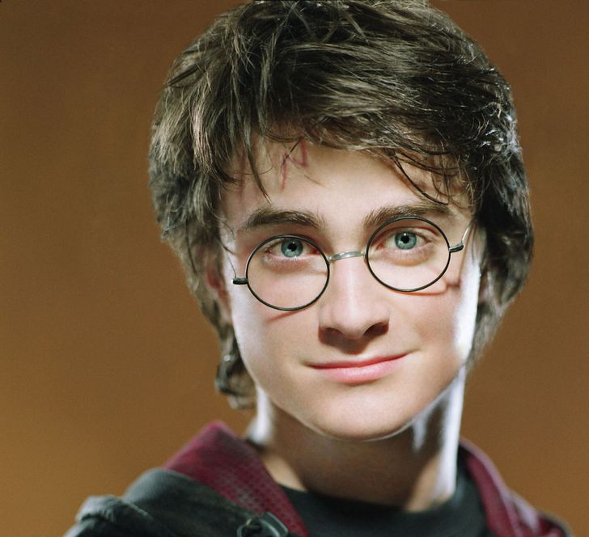

Wizards are just a lucky guy
Harry Potter - an orphan 11 years old, a scar on his forehead, round glasses. His relatives consider him insane and keep him in a closet under the stairs. This story is somewhat reminiscent of the plot of Cinderella, is not it? Even before Harry was born, a prophecy was made that at the end of July a boy would be born, whose parents three times challenged Voldemort (popularly the Dark Lord or He-Who-Must-Not-Be-Named) and remained alive. He will either be able to defeat the Dark Lord, or he will die at his hands. Voldemort is an evil magician, defeated 10 years before the time the first book begins, while trying to destroy Harry's entire family. But thanks to the maternal sacrifice, the boy survived, and the Dark Lord became a ghost and now wants to be resurrected. The 7 books are set in a world similar to England in the 90s.


Oh, Harry Potter and the Sorcerer's Stone is perhaps my favorite book. I even regret a little when I got rid of the whole series of books (I grew out of such children's reading), did not leave this book to myself. Although, maybe not in vain ... I do not think that this is the kind of book that I would love to reread over and over again. This is not a complicated and multilevel book about the Master and Margarita by Mikhail Bulgakov, this is just a children's fairy tale and nothing more. A kind, instructive story about a child-wizard from birth, who ended up in a school of Wizardry and received the first lessons there from the cruel world of adults, in which the boy Harry is given the first chance to open the veil of the secrets of his birth. Perhaps this is the lightest, most innocent and optimistically colored fairy tale from its series of books. In the next books there will be more deaths, more suffering, the moral of the book will remain the same - good triumphs over evil. And this is the most important thing. The book has been translated into Russian in a fairly high quality, easy to read in one breath. I do not know if the fashion for Potteromania has now passed, but it must be admitted that this book, as part of a general series of books about Harry Potter, touched the hearts of many people and made them believe in a fairy tale, in the existence of magic, spells and a parallel magical world. And who knows, maybe the dream that JK Rowling once had, and expressed in this book, is the truth. Time will tell.
I read it a few years ago, seeing what interest my niece showed to these books. It seemed to me that the author was in too much of a hurry, many places were crumpled. But, I think, what I didn't like very much was more influenced by the quality of the translation (I don't remember who). And now I can say unequivocally: for all its shortcomings, the book introduces children not only to reading, but also to classical music (as a result of the film adaptation). Plus, it makes teenagers want to learn English. Therefore, in spite of everything, I put solid tens!
The adaptation of the first Harry Potter book, according to fans, is the most "childish" and fabulous of all. However, the genre can be easily explained by the age of the heroes: they are just entering the world of witchcraft and adventure, and are unaware of all its dangers. It's a bit of a pity that Tim Roth never played the role of Potions Master Severus Snape, which was planned at the initial stages. But Alan Rickman coped with the role so brilliantly that after him it is difficult to imagine Snape as any other. Another slight regret may be caused by the fact that the famous Steven Spielberg never took the picture. It was he who was the main contender for the director's position, but in the end he refused, realizing that in this tape he would hardly be able to prove himself: "Harry Potter", whoever made films about him, will always be only a screen version of J.K. Rowling's books.